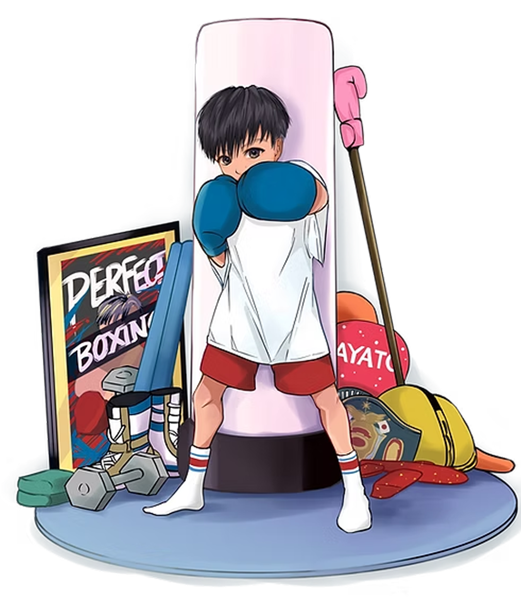
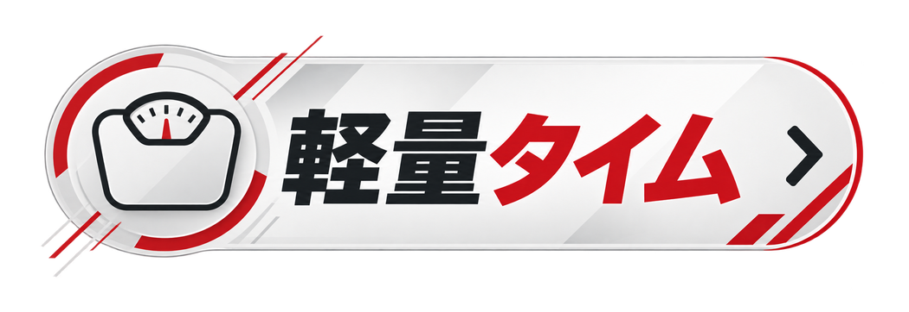
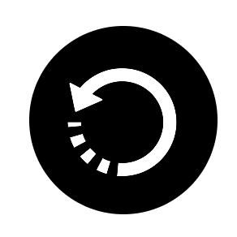

ROUND TIME
−
3:00
+
INTERVAL
−
1:00
+
ROUNDS
−
3
+
SOUND
CHEER
BGM
START

←
WEIGHT CLASS
プロ
アマ
UJ
JCL
WEIGHT
kg
YOUR CLASS
—
—
ROUND
1
/
3
3:00

ホーム画面への追加方法
×
ホーム画面に入れておくと、アイコンから一発で開けて全画面で使えます。電波がない場所でも動きます。
iPhone の方
Android の方
閉じる
FINISHED
GREAT WORK
OK